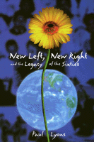

<body bgcolor="#FFFFFF" text="#000000" link="#0000FF" vlink="#CC0000" alink="#CC0000"><center><hr width="350" size="1" align="center" noshade>A controversial reworking of the sixties and its ongoing impact on American politics and culture<hr width="350" size="1" align="center" noshade><p><a href="https://cdcshoppingcart.uchicago.edu/Cart/ChicagoBook.aspx?ISBN=9781566394772&&PRESS=temple" target="_top">Buy this book!</a> | <a href="https://cdcshoppingcart.uchicago.edu/Cart/Cart.aspx?PRESS=temple" target="_top">View Cart</a> | <a href="https://cdcshoppingcart.uchicago.edu/Cart/Cart.aspx?PRESS=temple" target="_top">Check Out</a></p><p></p></center><!--none//--><h1>New Left, New Right, and the Legacy of the Sixties</h1>
<h3>Paul Lyons</h3>
<P>cloth 1-56639-477-5 $90.50, Oct 96, <FONT COLOR=#990033>Available</FONT>
<br>paper 1-56639-478-3 $36.95, Sep 96, <FONT COLOR=#990033>Available</FONT>
<BR> 256 pp
5.5x8.25
</P><BLOCKQUOTE><I>"Paul Lyons is one of the most sensible writers dealing with that most unsensible of subjects: the legacy of the Sixties. Ethnographically acute, politically balanced, eloquently engaged, Lyons gets at the complexities of generational conflict in ways discomforting to ideologies of the Left and the Right. </I>New Left, New Right, and the Legacy of the Sixties<I> ought to be a book for the Nineties."</I>
<br>&#151<b>Alan Wolfe</b>, Boston University<I></I></BLOCKQUOTE>
<p>Paul Lyons closely examines two equally important movements of the early sixties, the New Left and the New Right, both sides equally critical of existing society and both utopian in their visions, and describes the ways in which the historical reality of the sixties has been dramatically distorted by popular political and social images.
<p><I>New Left, New Right, and the Legacy of the Sixties </I>points to the oversimplification of this generation--not only were there those who served and those who protested, but those who did neither, "the silent majority," a group often overlooked but deeply affected. Examining the careers of such conservative figures as William F. Buckley, Jr., Barry Goldwater, and David Keene, Lyons demonstrates that while the New Left was rallying in the streets, the New Right was building a platform of its own, one that would enable the movement to take center stage by the eighties with the election of Ronald Reagan.
<p>This book also points to other fallacies like the exaggerated rightward turn that occurred as the sixties receded, and the misuse of the term "yuppie." Lyons examines this term and explains that while it originally defined a group of young, upwardly mobile professionals in relationship to electoral politics, it became a word used to describe patterns of consumption and lifestyle. The author asserts that the road to understanding this term's significance also reveals the ways in which social issues have permeated our political culture.
<p>Lyons concludes that despite all of the progress initiated by the political momentum of the sixties, we as Americans are still plagued by debates about issues like multiculturalism, Afrocentrism, and affirmative action, and in order to effectively address these issues today, we must acknowledge and accept the contributions made by both movements.
<BR>&nbsp;<h2>Contents</h2><P>
<p>Acknowledgments
<br>1. The Sixties
<br>2. How Did We Get to the Sixties?
<br>3. New Left, New right, New World
<br>4. Vietnam: Silent-Majority Baby Boomers
<br>5. Identity Politics: Snatching Defeat from the Jaws of Victory
<br>6. Another Sixties: The New Right
<br>7. Yuppie: A Contemporary American Key Word
<br>8. Clinton, Vietnam, and the Sixties
<br>9. The Sixties: Legacy
<br>Bibliography
<br>Index
</P><BR>&nbsp;<H2>About the Author(s)</H2>
<P><B>Paul Lyons </B>is professor in the Social and Behavioral Sciences Division at Stockton College, Pamona, New Jersey.</P>
<BR><H2>Subject Categories</H2>
<p><A HREF="/tempress/general.html" TARGET="_top">General Interest</a>
<BR><A HREF="/tempress/history.html" TARGET="_top">History</a>
</p>
<p align="center"><a href="https://cdcshoppingcart.uchicago.edu/Cart/ChicagoBook.aspx?ISBN=9781566394772&&PRESS=temple" target="_top">Buy this book!</a> | <a href="https://cdcshoppingcart.uchicago.edu/Cart/Cart.aspx?PRESS=temple" target="_top">View Cart</a> | <a href="https://cdcshoppingcart.uchicago.edu/Cart/Cart.aspx?PRESS=temple" target="_top">Check Out</a></p><p><font face="Arial" size="1"><a href="copyright.html" onMouseOver="window.status='Web Copyright Policy';return true;" onMouseOut="window.status=''" title="Web Copyright Policy">&copy;</a> 2015 <a href="http://www.temple.edu" target="new" onMouseOver="window.status='Link to Temple University home page';return true;" onMouseOut="window.status=''" title="Link to Temple University home page">Temple University</a>. All Rights Reserved. http://www.temple.edu/tempress/titles/1233_reg.html</font></p>